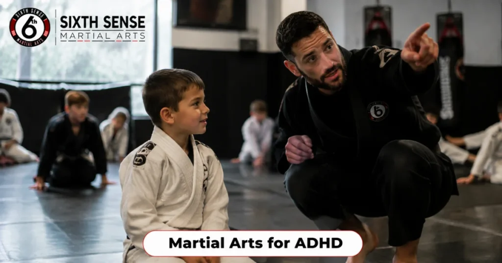
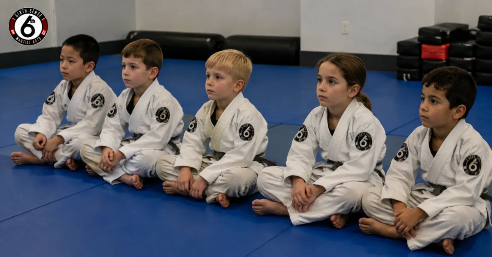
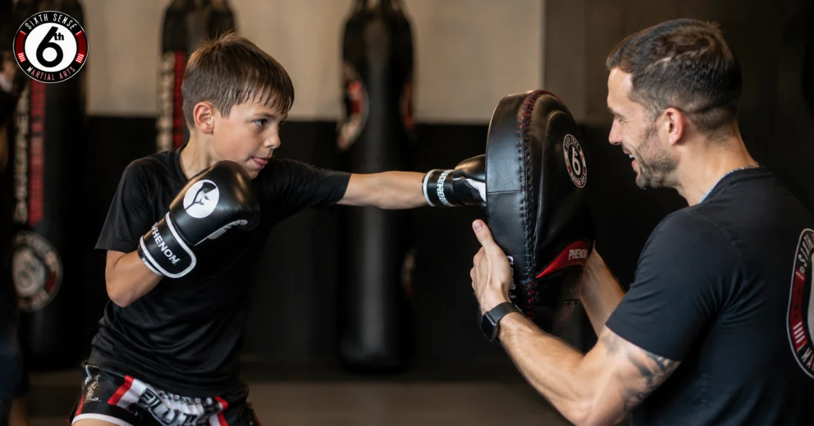

How Martial Arts for ADHD Improves Focus and Self Control Naturally

Why Martial Arts for ADHD Is Gaining Attention
If you are a parent raising a child with ADHD you already know how exhausting the search for solutions can be. Between doctors appointments school meetings and endless advice everyone seems to have an opinion. However more and more families are discovering that martial arts for ADHD offers something most activities cannot. It combines physical movement structure and mental focus in a way that speaks directly to how the ADHD brain works. At Sixth Sense Martial Arts in Coppell TX we have seen kids who struggle to sit still in class transform into focused disciplined young people on the mat. So in this guide I will walk you through exactly how and why this works and what the research actually says.
What the Science Says About Martial Arts for ADHD
Let me be clear this is not just feel good marketing. There is real research behind martial arts for ADHD. Because of this many experts now view structured martial arts as a valuable complement to traditional ADHD support. However it is important to understand that martial arts works best alongside proper medical care not as a replacement for it.
How Martial Arts for ADHD Trains the Brain to Focus
Most physical activities burn energy but martial arts for ADHD does something more specific. It demands attention at the exact same moment it demands movement. You simply cannot zone out during a technique drill or let your mind wander in the middle of a sparring round. As a result every single drill forces your child to hold a goal in their mind suppress impulsive reactions and shift their focus quickly. Furthermore these are not accidental side effects they are the core mental demands of the sport. Consequently the ADHD brain gets a targeted workout in exactly the areas it struggles with most. This is why parents often notice their child concentrating better within just a few weeks of consistent training.
Why Structure Makes Martial Arts for ADHD So Effective
Children with ADHD thrive on structure that actually makes sense to them. This is where martial arts for ADHD truly shines. Every class follows a predictable routine that includes a warm up technique practice drilling and a cool down. As a result kids always know what to expect which removes the anxiety of uncertainty. Moreover the clear rules and expectations give children a framework they can rely on. In addition the belt ranking system provides small achievable goals that keep them motivated over time. Unlike a chaotic classroom or an unstructured sport martial arts gives kids with ADHD a stable environment where they can succeed. That predictability is exactly what their brains need to stay engaged and focused.

How Martial Arts for ADHD Builds Real Self Control
Self control is often the biggest challenge for children with ADHD. Fortunately martial arts for ADHD addresses this head on through consistent practice. During training kids learn to wait their turn control their movements and respond calmly instead of reacting impulsively. For instance when a child wants to rush ahead the coach guides them to slow down and focus on proper technique. As a result they slowly build the ability to pause and think before acting. Moreover this self regulation is reinforced every single class through repetition and positive feedback. Over time these skills do not stay on the mat. They carry over into the classroom the dinner table and every other part of your child’s daily life.
The Role of Physical Activity in Martial Arts for ADHD
ADHD is closely tied to how the brain uses dopamine which affects attention motivation and impulse control. Interestingly martial arts for ADHD helps regulate these brain chemicals naturally through intense physical activity. As a result training can produce a natural calming and focusing effect. In addition the physical exertion helps burn off the excess energy that often makes children with ADHD feel restless. This combination of brain chemistry and movement is what makes martial arts uniquely suited for these kids.
How Martial Arts for ADHD Boosts Confidence and Self Esteem
Kids with ADHD often hear a lot of negative feedback. They get told to sit still stop fidgeting and pay attention which slowly chips away at their confidence. However martial arts for ADHD flips this script completely. Every small win like learning a new move or earning a stripe on their belt builds genuine self esteem. As a result children start seeing themselves as capable and successful rather than as a problem to be managed. Moreover the supportive environment at Sixth Sense celebrates effort and progress not just natural talent. Consequently kids who felt like they were always failing finally get to experience real achievement. This boost in confidence often becomes the turning point that changes how they approach challenges everywhere.
Why BJJ Is Excellent Martial Arts for ADHD
Brazilian Jiu Jitsu is one of the most effective forms of martial arts for ADHD and here is why. Every roll on the mat presents a live unscripted problem that demands quick thinking and creative solutions. As a result BJJ strengthens cognitive flexibility which is the brain’s ability to switch between different tasks and ideas. This is exactly the skill that ADHD affects most. Furthermore BJJ requires total presence because the moment your child stops paying attention they lose position. In addition the one on one nature of grappling keeps them fully engaged with no room to get distracted. Because of this many parents at Sixth Sense find that BJJ holds their child’s attention better than any team sport they have tried.
How Muay Thai Works as Martial Arts for ADHD
While BJJ engages the mind on the ground Muay Thai offers a different but equally powerful approach to martial arts for ADHD. The striking drills require precise coordination timing and focus which forces the brain to stay locked in. Moreover the physical intensity of hitting pads and bags gives kids a healthy outlet for their abundant energy. As a result they leave class feeling calmer and more centered. Furthermore Muay Thai teaches kids to follow multi step combinations which strengthens their working memory over time. In addition the rhythmic repetitive nature of the movements has an almost meditative quality that helps quiet a busy mind. This blend of energy release and mental focus makes Muay Thai a fantastic fit for children with ADHD.

What Parents Notice After Starting Martial Arts for ADHD
The changes parents report after starting martial arts for ADHD are often remarkable. Within the first couple of months many families notice their child listening better at home and following instructions without needing constant reminders. Moreover teachers frequently comment on improved behavior and focus in the classroom. As a result homework battles start to ease and mornings become less chaotic. In addition parents observe their child managing frustration more calmly instead of melting down over small setbacks. Furthermore the discipline and routine of training often spill into better sleep habits and daily organization. These are not overnight miracles but the steady consistent improvements that come from training week after week. That kind of real world change is what keeps families coming back.
Choosing the Right Gym for Martial Arts for ADHD
Not every gym is equipped to support a child with ADHD which is why choosing the right place matters so much. When looking for martial arts for ADHD you want instructors who understand how to work with neurodiverse kids. At Sixth Sense head coach Matheus brings over 15 years of experience and knows how to keep every child engaged and included. Moreover the classes are kept at a manageable size so each kid gets personal attention rather than getting lost in a crowd. In addition the coaching style focuses on patience encouragement and clear expectations. Furthermore a clean structured and welcoming environment makes a huge difference for a child who is easily overwhelmed. The right gym does not just teach techniques it helps your child thrive.
Getting Started With Martial Arts for ADHD at Sixth Sense
Starting your child’s journey with martial arts for ADHD is easier than you might think. Sixth Sense Martial Arts at 817 S MacArthur Blvd in Coppell TX offers a free trial class so your child can experience it with no pressure and no commitment. During that first session the coaches will make your child feel welcome and comfortable from the very start. Moreover you do not need to worry about prior experience or special equipment because everything is beginner friendly. In addition the gym offers flexible class times that fit around school and family schedules. The gym also welcomes families from Valley Ranch Irving Carrollton Grapevine and Lewisville. Taking that first step could be the change your child has been needing.
Conclusion
Martial arts for ADHD is not a magic cure but it is one of the most natural and effective tools available for helping children build focus self control and confidence. From the science backed improvements in attention to the structure that ADHD brains crave every element of training works together to support your child. Whether you choose BJJ Muay Thai or both the team at Sixth Sense Martial Arts in Coppell TX is ready to help your child succeed on the mat and in life. Remember that martial arts works best alongside the guidance of your child’s doctor. So if you are ready to see what your child is truly capable of book a free trial class and watch the transformation begin.
Contact Us
Have questions about our classes or training programs. We would love to hear from you. Reach out to us today and let us help you start your martial arts journey the right way.
Follow Us on Social Media
Stay connected with the Sixth Sense Martial Arts community. Follow us for training tips belt grading updates student highlights and exclusive offers.
FAQ’s
Yes research supports it. However martial arts should complement not replace the treatment plan your child’s doctor recommends.
Both BJJ and Muay Thai work exceptionally well. BJJ builds problem solving and cognitive flexibility on the ground while Muay Thai channels energy through structured striking. Many kids benefit from a mix of both depending on their personality and needs.
Children can start young and benefit from the structure right away. The coaches at Sixth Sense adapt their teaching to each child’s age and developmental level so even younger kids can participate safely and successfully.
No and it should not be viewed that way. Martial arts is a powerful natural complement to your child’s existing treatment. Always talk to your child’s doctor before making any changes to their medication or care plan.
Every child is different but many parents notice better focus and calmer behavior within the first two to three months of consistent training. The key is regular attendance which allows the benefits to build over time.
Not at all. The coaches at Sixth Sense are experienced with energetic and neurodiverse kids. The structured environment and personal attention actually help children with ADHD channel their energy productively rather than disrupt the group.
Train with us in Coppell
The first class is free. Shorts, a t-shirt and a water bottle. We lend the rest.
Book a free class